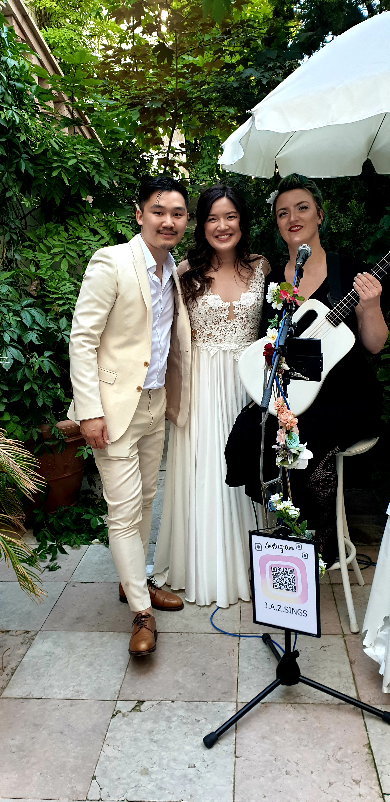
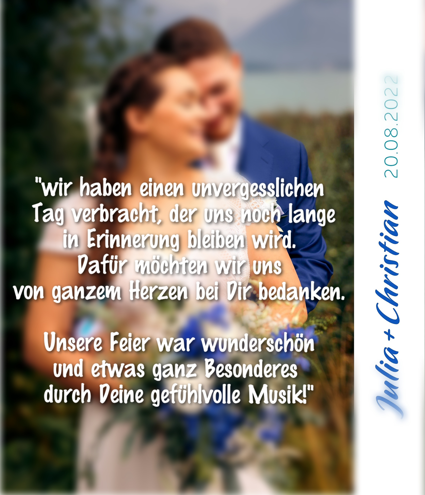
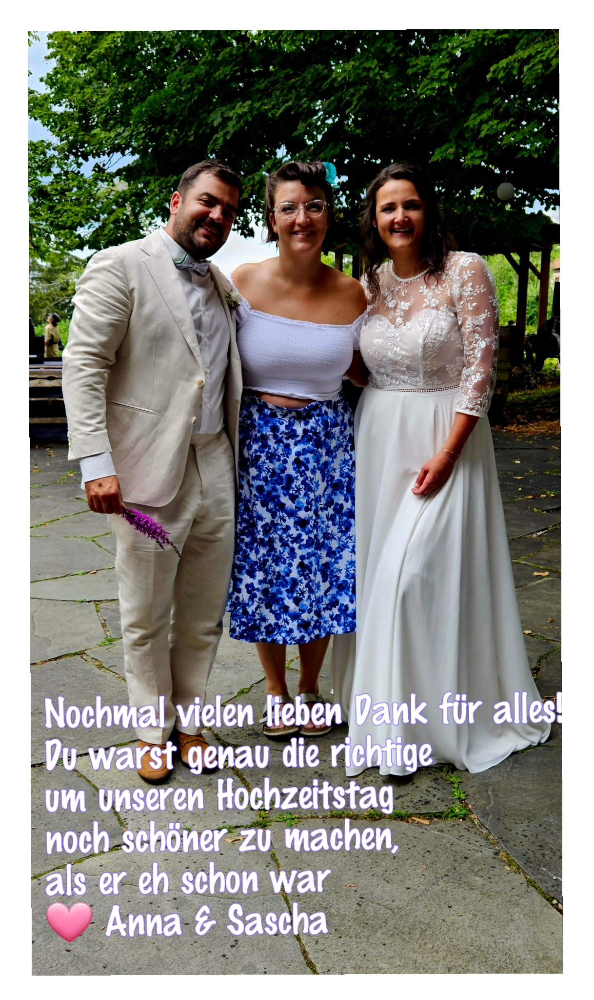
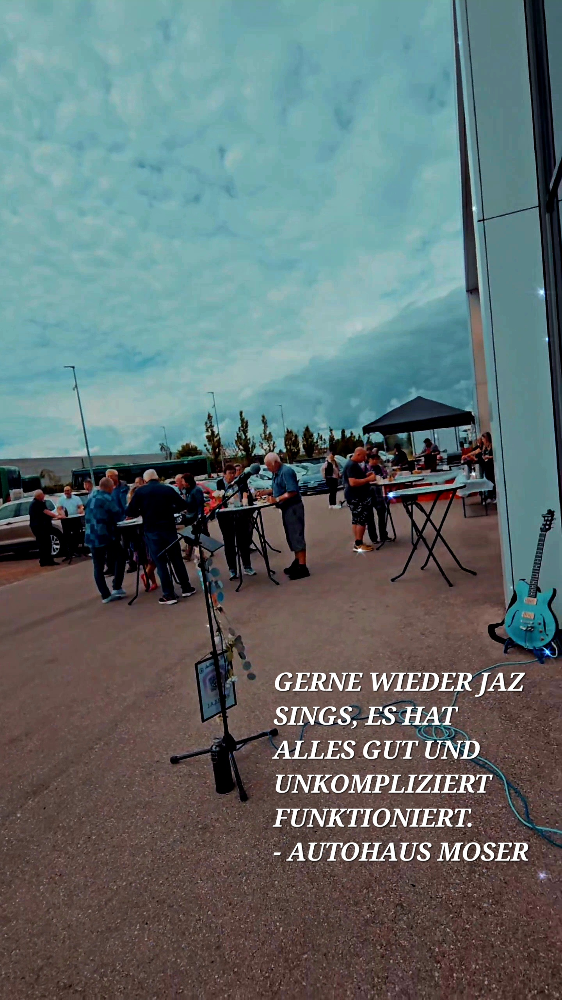
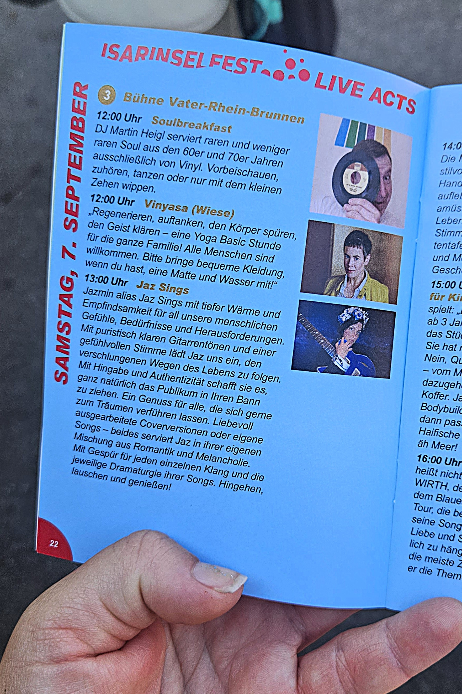
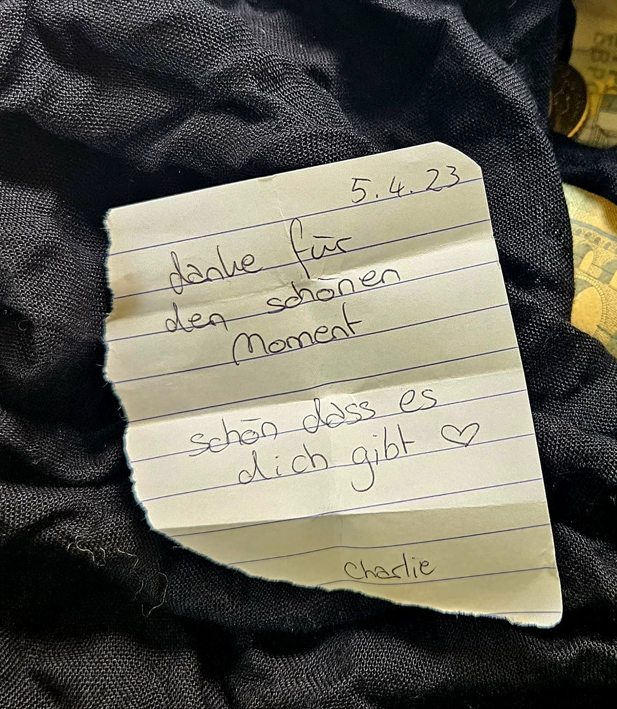
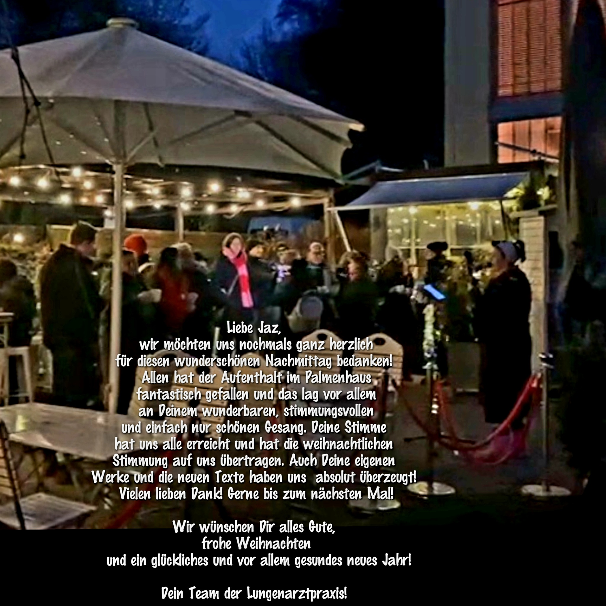
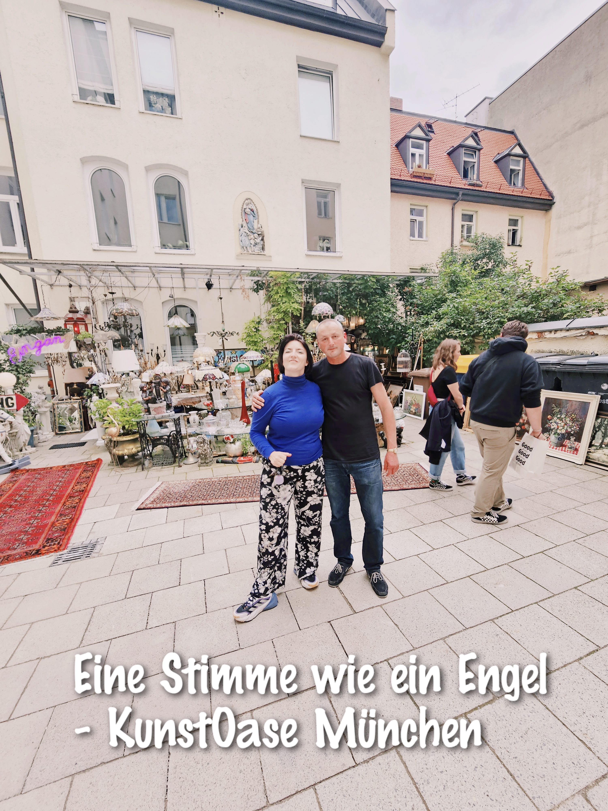
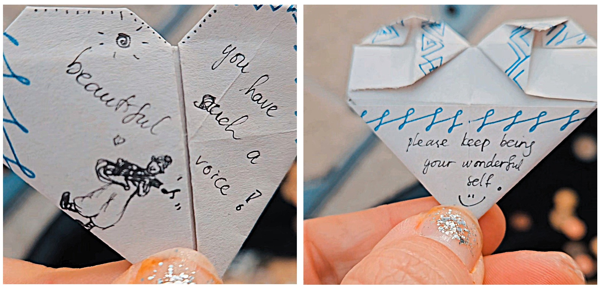
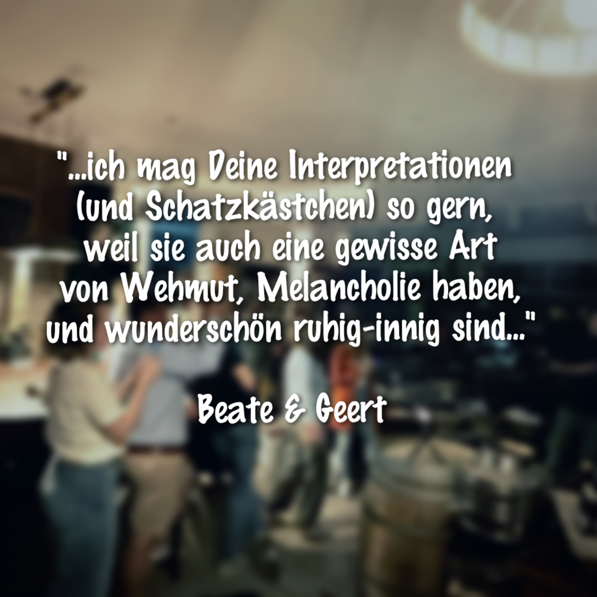

Referenzen
Live-Musik · Hochzeiten · Events · Straßenmusik · München

Hochzeit · München

Hochzeit · Starnbergersee

Hochzeit · Starnbergersee

Hochzeit · Bad Tölz
Hochzeit Vlog · YouTube
Hochzeit Rooftop · München
Hochzeit Rooftop · München
Corso Leopold · München

Firmenfeier · Germering
Sofaconcerts · Privatkonzert

Isarinselfest · München

Straßenmusik · München
Sendlinger Bergweihnacht

Weihnachtsfeier · Palmenhaus

Vernissage · Kunstoase München

Straßenmusik · Augsburg

Feinkostbar · Deisenhofen
Hochzeit Vlog · Instagram